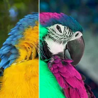

색조 및 채도

색상환을 따라 색조를 바꾸고 채도를 조절합니다. 생동감은 채도가 낮은 색상을 더 강하게 보정합니다.
색조는 모든 색을 색상환을 따라 돌립니다(한 바퀴는 360도). 채도는 색을 진하거나 연하게 합니다. 0에 가깝게 낮추면 색이 빠지고, 높이면 더 강렬해집니다. 생동감은 가장 탁한 색을 가장 많이 살리고, 명도는 그림을 밝게 하거나 어둡게 합니다.
색조를 애니메이션하면 무지개 색이 순환합니다. 흑백 룩을 원하면 채도를 0까지 낮추세요.
설정
| 설정 | 유형 | 범위 | 기본값 |
|---|---|---|---|
| 색조 | 각도 | -360°~360° | 60° |
| 채도 | 숫자 | 0~3 | 1.4 |
| 생동감 | 숫자 | -1~1 | 0 |
| 명도 | 숫자 | -1~1 | 0 |
| 스타일 | 선택지 | 클래식, 밝기 유지 | 클래식 |